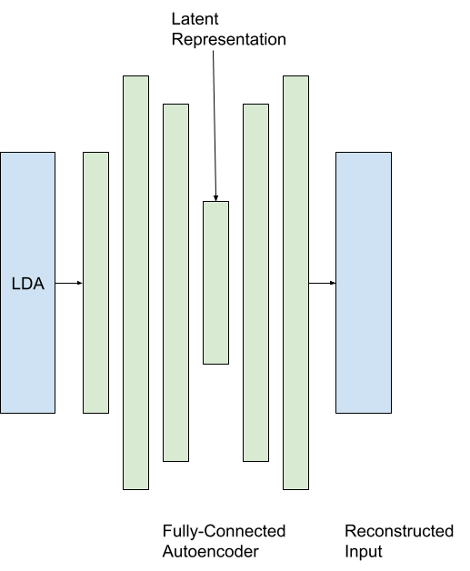
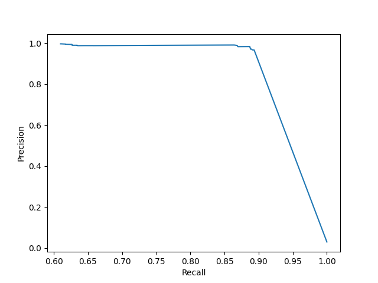

Stacked Denoising Autoencoder for Log Anomaly Detection
March 2021
Background
Log anomaly detection can be described as the process of identifying anomalous messages from system logs automatically, helping system analysts quickly debug critical failures in their software. There have been many past approaches to log anomaly detection, such as DeepLog - an LSTM based deep neural network . In this project, I tried my own approach to tackle log anomaly detection on the HDFS logs dataset provided by LOGPAI.
Approach
Log files contain several sequences of execution grouped by their session ID; these sequences contain several log messages which may or may not be anomalous. We can numerically represent a given sequence by a vector containing the counts of each unique log message type, to create a vector of size, M, where there are M unique log message types.
Latent Dirichlet Allocation is a statistical model which aims to find a discrete probability distribution over a set of arbitrary “topics” to group sets of “documents”. In this case, log sequences were treated as “documents” and the probability vectors over the set of topics were treated as features for these log sequences. These features were passed to a fully-connected autoencoder to encode these probability vectors in latent space, learning relationships between the given sets of topics.

Image Description: Proposed model architecture.
Data
This model was trained on completely normal log sequences and evaluated on log sequences containing both normal and anomalous messages. The idea is that the model would learn to only represent normal sequences and thus, anomalous sequences would incur a high reconstruction loss. Thresholds were applied to the reconstruction loss to classify anomalous sequences from normal ones.
Number of sessions
Train Set
279127 normal
Test Set
279096 normal
8435 anomaly
Table 1: Data distributions.
Results

Image Description: Precision-Recall Curve over several thresholds.
Model
Precision
Recall
F1
Denoising Autoencoder (This work)
0.983
0.887
0.933
LOF
0.967
0.561
0.710
One-Class SVM
0.995
0.222
0.363
Isolation Forest
0.830
0.776
0.802
PCA
0.975
0.635
0.769
Invariants Mining
0.888
0.945
0.915
Clustering
1.0
0.720
0.837
Table 2: Metrics comparison between this work and previous models. [source]
The results show this model stacks up with other semi-supervised (only trained on normal log sequences) and unsupervised models in terms of precision, recall and f1-score on the HDFS dataset.